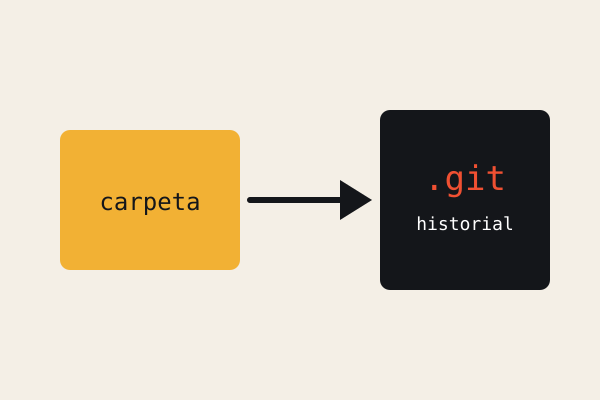
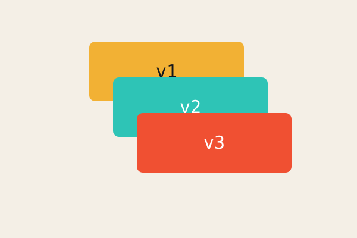
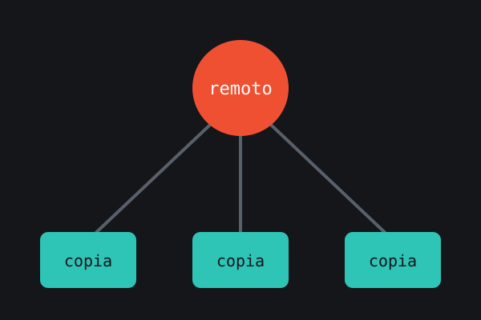

¿Qué es Git?
Git es un sistema de control de versiones: registra los cambios que haces en tus archivos para que puedas revisar el historial, deshacer errores y comparar versiones en cualquier momento.
A diferencia de guardar copias como «proyecto_final_v2_ahora_si», Git guarda instantáneas ordenadas de todo el proyecto y sabe exactamente qué cambió entre una y otra.
Además es distribuido: cada persona tiene una copia completa del repositorio, por lo que se puede trabajar sin conexión y sincronizar después con un servidor como GitHub.



Preguntas rápidas
No. Git es la herramienta que corre en tu computadora; GitHub es un sitio que aloja repositorios Git en la nube.
El ZIP solo trae los archivos. Al clonar también se descarga el historial y la conexión con el remoto.
Una carpeta de proyecto que contiene tus archivos y la carpeta oculta
.git con todo el historial.Dato
Creado en 2005
Linus Torvalds lo creó para gestionar el desarrollo del kernel de Linux.